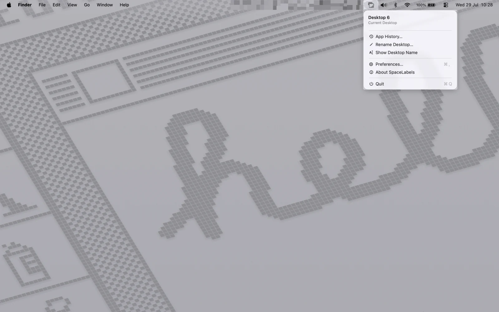
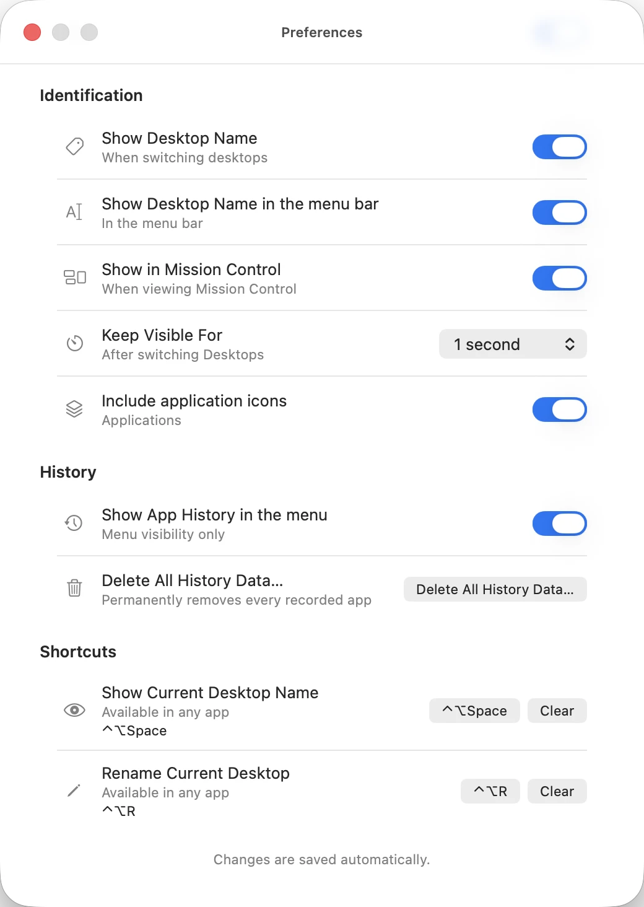

SpaceLabels para macOS
Dê nome às Mesas do seu Mac.
Ao trocar de Mesa, veja imediatamente o nome e os aplicativos daquele contexto — sem abrir o Mission Control.
Versão — · macOS 15 ou superior · — · Gratuito
Conferindo a Release pública antes de liberar o download…
O download está indisponível porque a Release pública não pôde ser validada. Nenhum arquivo alternativo será oferecido.
Fica onde você já olha.
O SpaceLabels vive na barra de menus. A Mesa atual, os aplicativos visíveis e as ações principais ficam a um clique, dentro do próprio ambiente do macOS.

Entenda o contexto em um olhar.
O produto aparece somente quando há algo útil para mostrar. Depois, deixa você continuar trabalhando.
O nome aparece. Você continua.
O HUD mostra a Mesa ativa e até quatro aplicativos visíveis. Ele não toma o foco e desaparece no tempo que você escolher.

A Mesa atual e suas ações.
Veja o nome, reconheça os aplicativos daquele contexto, renomeie a Mesa ou abra o Histórico sem procurar outra janela.
Retome os aplicativos que fechou.
Cada Mesa mantém seu próprio contexto. Abra Code, iTerm2 ou todos os aplicativos daquele trabalho quando precisar voltar.

Nomeie cada Mesa do seu jeito.
Troque “Desktop 3” por um nome curto que faça sentido para você. O SpaceLabels usa esse nome para que cada troca de Mesa seja reconhecida imediatamente.

Ajuste ao seu jeito de trabalhar.
Escolha a duração do HUD, os ícones e como o sinal se comporta no Mission Control.

Baixe.
Mova.
Abra.
A versão pública inclui o aplicativo, o checksum para verificar o download e instruções diretas de instalação.
-
1
Abra o DMG
Baixe a Release pública e abra a imagem de disco.
-
2
Mova para Aplicativos
Arraste o SpaceLabels para a pasta Aplicativos.
-
3
Confirme a abertura
No Finder, escolha Abrir no menu contextual e confirme.
Checksum e detalhes da versão
Nesta versão
- Aguardando notas da Release pública.